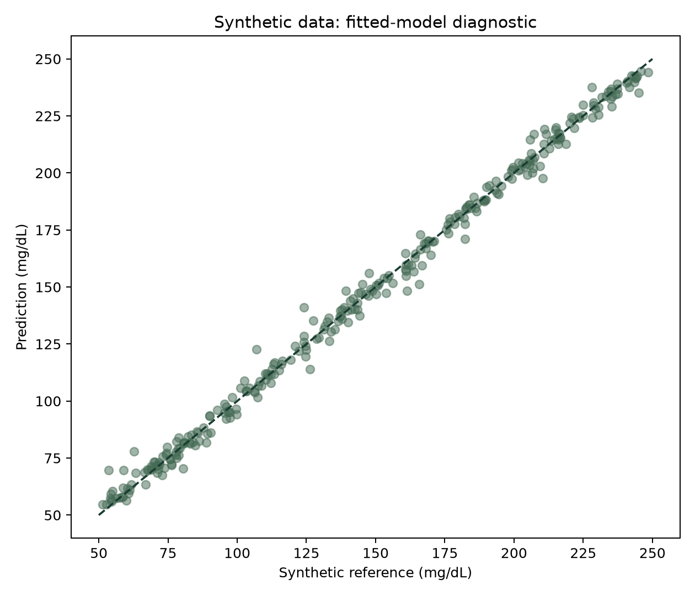
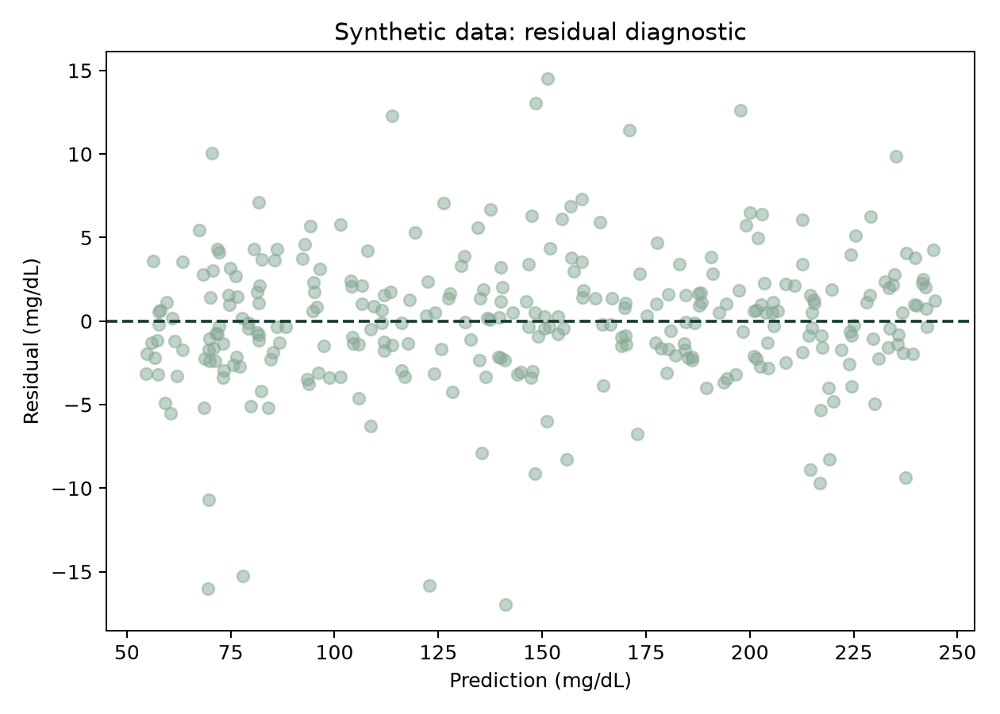
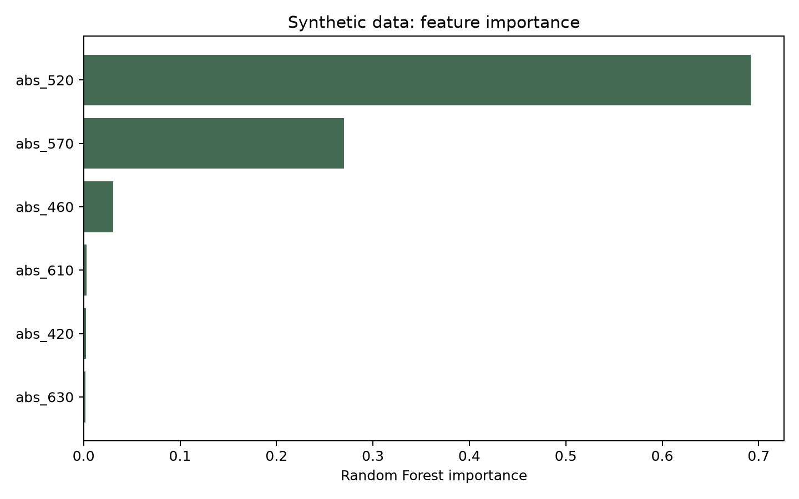
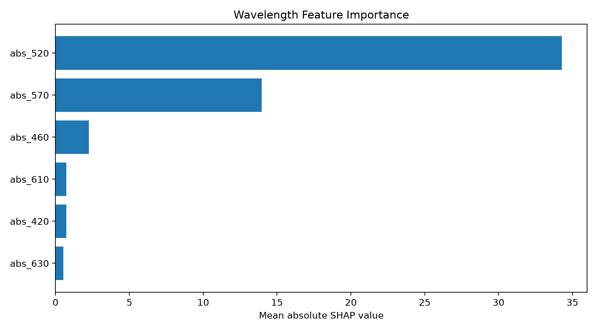

Random Forest regression and explainability
The original report's experimental results and the reconstructed software demonstration are presented separately to preserve scientific provenance.
Original report: reported performance
Model configuration
| Parameter | Value |
|---|---|
| Model | Random Forest Regressor |
| Estimators | 150 |
| Maximum depth | 8 |
| Train/test allocation | Approximately 80/20 |
| Cross-validation | Five-fold |
Synthetic demonstration figures
The following plots are generated using a reproducible synthetic dataset. They are software diagnostics and must not be interpreted as independent clinical results.
Prediction Diagnostic

Fitted-model diagnostic including training observations.
Residual Analysis

Residual patterns on simulated measurements.
Feature Importance

Model importance derived from synthetic features.
SHAP Explainability

SHAP visualization, when generated by the local Python analysis script.
Interpretation and limitations
The report identifies the 520 nm channel as influential in its feature analysis. This observation belongs to the original report and should not be conflated with feature importance calculated from synthetic data.
View Results Documentation